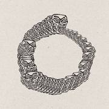

Conversation 896
Uroboros Symbol Meaning
Prompt 1 · You
uroboros
Response 1 · Google AI Mode

 Vocabulary.com
Vocabulary.comSymbolism & History
- Meaning: It represents infinity, eternity, and the cyclic nature of the universe—such as death and rebirth, or creation and destruction.
 Wikipedia +1
Wikipedia +1 - Origins: The motif dates back to ancient Egypt (around the 14th century BCE, appearing in the tomb of Tutankhamun) and later spread into Greek magic, alchemy, Gnosticism, and Hermeticism. Vocabulary.com
- Global Parallels: Similar serpent symbols appear in other mythologies, such as Jörmungandr in Norse mythology. Wikipedia
Popular Culture
- Resident Evil Wiki: Uroboros is a lethal, Progenitor-based RNA virus created by Albert Wesker and TRICELL in Resident Evil 5 intended to force human evolution.
 YouTube·Ink Ribbon +2
YouTube·Ink Ribbon +2 - Other Media: The symbol or name appears in various shows, books, and games (such as Loki and manga series). Wikipedia
Are you looking for the historical and alchemical meaning of the symbol, or its usage in a specific game, book, or show?
Source links preserved from this response
- www.vocabulary.com
https://www.vocabulary.com/dictionary/uroboros - cs.wikipedia.org
https://cs.wikipedia.org/wiki/Uroboros - ro.wikipedia.org
https://ro.wikipedia.org/wiki/Uroborus - Resident Evil 5
https://residentevil.fandom.com/wiki/Uroboros_Virus - www.youtube.com
https://www.youtube.com/watch?v=B1jB_S9vqk8&t=15 - it.wikipedia.org
https://it.wikipedia.org/wiki/Uroboro
Prompt 2 · You
so people eating their own time inverse logarithmically
Response 2 · Google AI Mode
The concept of "eating one's own time inverse logarithmically" is a fascinating, abstract blend of the ouroboros motif and mathematical scaling.
If we translate this poetic phrase into literal concepts, it describes a process that accelerates drastically as it nears the end:
- Eating One's Own Time: Much like the ouroboros consumes its own tail to sustain itself, a person consuming their own time implies a closed loop where past actions directly eat away at future potential.
- Inverse Logarithmic Scaling: In mathematics, a logarithmic scale compresses large numbers (it grows very slowly). Therefore, an inverse logarithmic relationship implies the opposite: as time moves forward, the rate of consumption doesn't slow down—it explodes upward.
The "Ouroboros Time" Effect
If someone is consuming their own time in this manner, they experience a shrinking horizon. At first, the loss of time is barely noticeable. However, because it scales inversely, the closer they get to the end, the faster time vanishes.
This perfectly mirrors a few real-world and philosophical concepts:
- The Psychology of Aging: Many people report that years seem to pass much faster the older they get. When you are 10, a year is 10% of your life; when you are 50, a year is only 2%. Time feels like it is shrinking inversely.
- Algorithmic Doom Loops: In modern technology, feeding data back into itself (like an AI training exclusively on its own output) creates a "model collapse" where quality degrades at an accelerating rate.
- Black Hole Event Horizons: In physics, as an object approaches a gravitational singularity, spacetime warps drastically, altering the flow of time relative to the outside observer.
Did you read this phrase in a specific science fiction book, philosophy essay, or physics paper, or are you exploring a creative concept of your own?